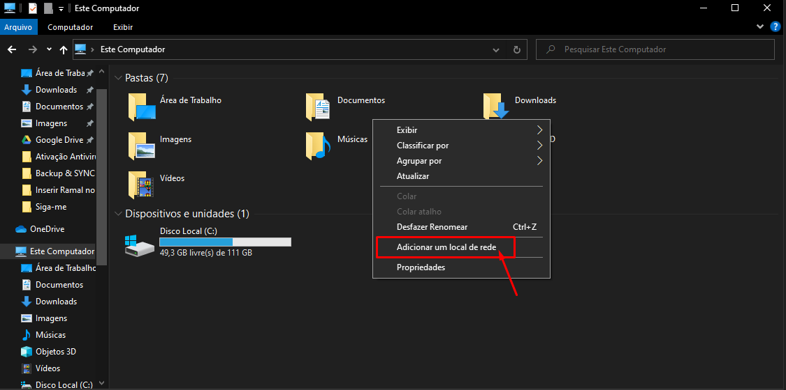
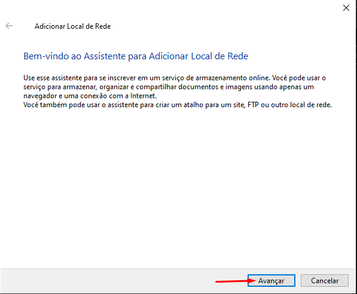
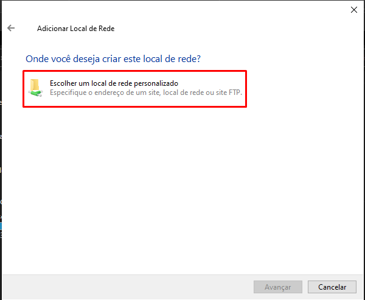
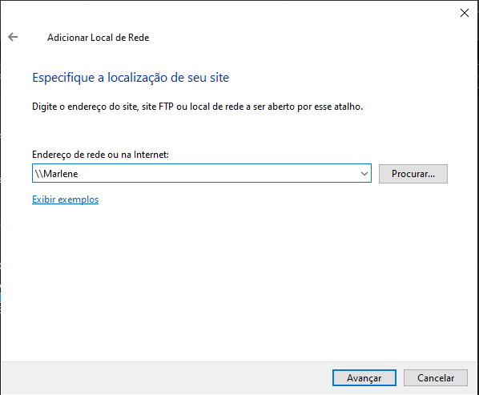
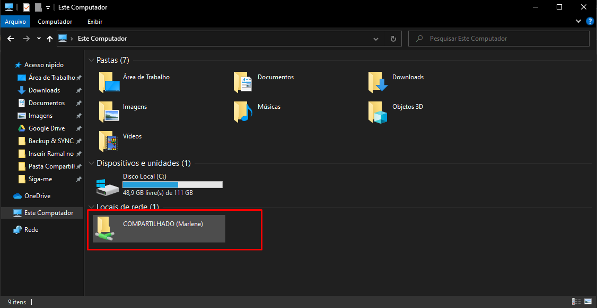

Manual - Pasta compartilhada
-
1º Passo:
Fazendo acesso para pasta compartilhada, é preciso duas informações
1- Caminho da pasta. Isso você pode encontra na máquina que tem a pasta.
2- Acesso da máquina. Usuário e senha da máquina onde tem a pasta.
Para acessar vá no “Este Computado” da máquina onde deseja colocar a pasta. C:\
2º Passo: Adicionando pasta
Clique com botão direito em qualquer lugar livre. E vá em “Adicionar um Local de Rede”.


-
Selecione a opção “Escolher um local de rede personalizado” e clique em avançar

-
Digite o caminho da pasta, lembre-se as máquinas precisam estar na mesma rede e com acesso a ethernet. Clique em “Avançar”.

-
Feito isso, pode ser que peça as credenciais, se isso acontece, é o usuário e senha da máquina que está hospedada a pasta compartilhada.

-
Pasta compartilhada acessada com sucesso.